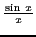
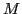
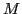

Next: The number Up: Theory of limits Previous: Special limiting values Contents Index
To motivate the limit computation of this section, using SAGE
we compute a number of values of the function
, as  gets closer and closer to 0:
gets closer and closer to 0:
| 0.5000 | 0.2500 | 0.1250 | 0.06250 | 0.03125 | |
| 0.9589 | 0.9896 | 0.9974 | 0.9994 | 0.9998 |
Indeed, if we refer to the table in §1.4, it will be seen that for all angles less than the angle in radians and the sine of that angle are equal to three decimal places. To compute the table of values above using SAGE, simply use the following commands.
[fontsize=\small,fontfamily=courier,fontshape=tt,frame=single,label=\sage] sage: f = lambda x: sin(x)/x sage: R = RealField(15) sage: L = [1/2^i for i in range(1,6)]; L [1/2, 1/4, 1/8, 1/16, 1/32] sage: [R(x) for x in L] [0.5000, 0.2500, 0.1250, 0.06250, 0.03125] sage: [R(f(x)) for x in L] [0.9589, 0.9896, 0.9974, 0.9994, 0.9998]
From this we may well suspect that
 .
.
Let  be the center of a circle whose radius is unity.
be the center of a circle whose radius is unity.
Let
 , and let
and
be tangents drawn to the circle at  and . From Geometry
(see Figure 3.12),
, and let
and
be tangents drawn to the circle at  and . From Geometry
(see Figure 3.12),
we have
It is interesting to note the behavior of this function from its graph, the locus of equation
Although the function is not defined for  , yet it is not discontinuous
when
, yet it is not discontinuous
when  if we define
(see Case II in §3.6).
if we define
(see Case II in §3.6).
Finally, we show how to use the SAGE command limit to compute the limit above3.5.
[fontsize=\small,fontfamily=courier,fontshape=tt,frame=single,label=\sage] sage: limit(sin(x)/x,x=0) 1
david joyner 2008-08-11